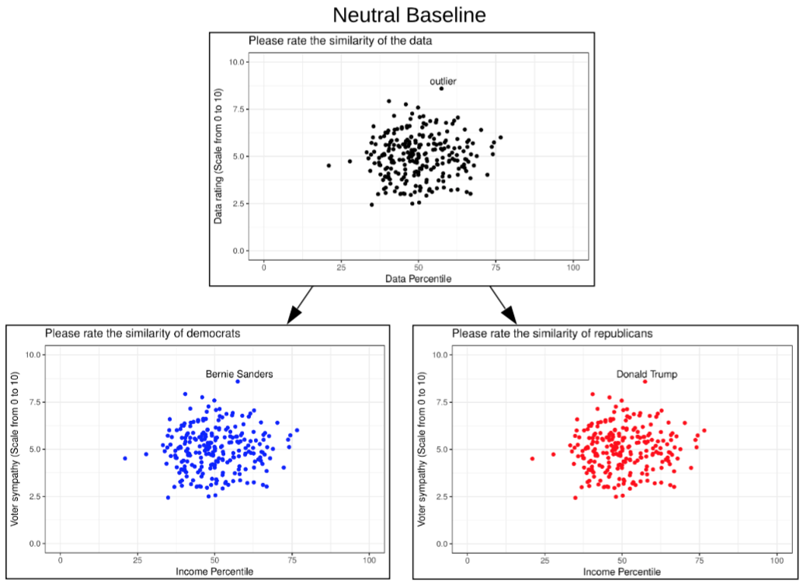

Studying Biases in Visualization Research: Framework and Methods

Authors. André Calero Valdez, Martina Ziefle, Michael Sedlmair
Venue. Cognitive Biases in Visualizations, Springer (2018) Book Chapter
Type. Book Chapter
Abstract. In this chapter, we propose and discuss a lightweight framework to help organize research questions that arise around biases in visualization and visual analysis. We contrast our framework against the cognitive bias codex by Buster Benson. The framework is inspired by Norman’s Human Action Cycle and classifies biases into three levels: perceptual biases, action biases, and social biases. For each of the levels of cognitive processing, we discuss examples of biases from the cognitive science literature and speculate how they might also be important to the area of visualization. In addition, we put forward a methodological discussion on how biases might be studied on all three levels, and which pitfalls and threats to validity exist. We hope that the framework will help spark new ideas and guide researchers that study the important topic of biases in visualization.